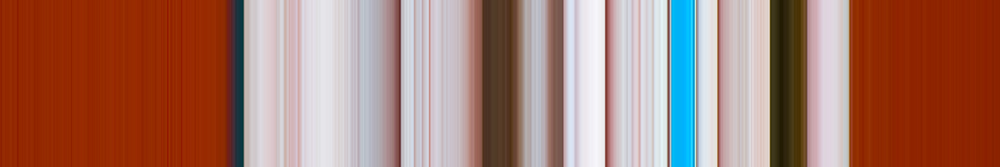
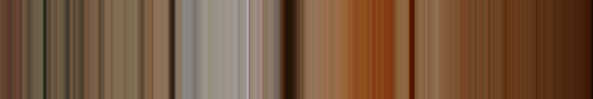

The idea behind this code is to convert the two-dimensional pattern of colours in photographs into one-dimensional strips. Concentrating on a strip of pixels, essentially one pixel wide but stretched out to make the image easier to see, emphasises the discreteness and tininess of pixels. Scanning through, say the height of a photo, and patching the resulting stretched, one-dimensional images together in a video, creates an odd kind of movement from a still image, and highlights different aspects of the structure of the image and its colour palette, compared to looking at the original, still version.
The central oneDHoriz function is very simple. Essentially the user specifies a row in an image and the function goes through each pixel in that row, copying that pixel's colour to a new image, but also copying that colour up and down the column of the new image to fill it completely. The script uses two excellent Python packages. NumPy to convert input images into an array of numbers and to operate on those arrays and the Python Imaging Library (PIL) to open, resize and save images to hard-drive. NumPy allows fast, vectorised sampling from the array version of the image and fast, vectorised copying to a target array. PIL is fast, easy to use and handles a wide range of file-types and common image operations (such as resizing, rotation etc.).
The resulting strips of colour are surprising and chaotic, however they are much more satisfying to look at than random colours. Although when taking a one-dimensional view of a two-dimensional object we throw away a lot of information about the source image, the patterns in the one-dimensional output are strongly influenced by the order (composition, focus, dynamic range and structure) of the source two-dimensional photograph. Several videos demonstrating sequential slicing of photographs to generate movement can be found here or viewed below. The separators above are generated using the same tools.